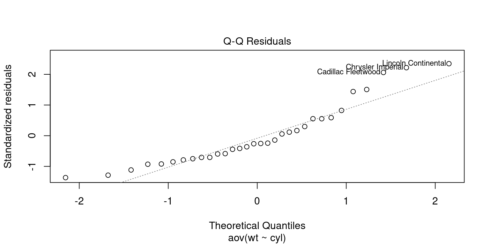

data(mtcars)
attach(mtcars)ANOVA
Feb 10, 2024
ANOVA (Analysis of Variance) is a statistical technique used to determine whether the means of two or more groups differ significantly from one another. It is employed to establish whether the mean difference is actually different or merely the result of chance.
There are several types of ANOVA, including One-Way ANOVA, Two-Way ANOVA, and Multi-Way ANOVA.
- One-Way ANOVA is used to compare the means of two or more groups, based on one independent factor.
- Two-Way ANOVA is used to compare the means of two or more groups while taking the influence of two independent factors into account.
- Multi-Way ANOVA is used to compare the means of two or more groups while taking the influence of more than two factors into account.
- ANOVA works by dividing the total variance in a set of data into two parts:
- the variance between the groups (between-group variance)
- the variance within the groups (within-group variance).
Calculating the F-ratio, which is the ratio of the between-group variance to the within-group variance, reveals whether there is a significant difference between the group averages.
ANOVA is frequently used to compare means and draw conclusions about populations from sample data in various disciplines, including economics, psychology, and marketing. Making data-driven, educated judgements based on statistical evidence is possible with this useful tool for spotting significant variations across groups.
Business Applications of One-Way ANOVA
It can be applied in various business applications such as:
Sales: Comparing the average sales of a product across various geographies or demographic groups to determine which group has the greatest average.
Quality control: Quality control involves comparing the average number of product flaws across various production lines or manufacturing procedures in order to identify the one that results in the fewest flaws.
Customer satisfaction: To analyse the average customer satisfaction scores across several product or service offerings and identify which one is producing the most positive feedback from customers.
Employee Salary: To assess whether there is a substantial variance in the employee salary across various departments or job positions.
Business Applications of Two-Way ANOVA
Sales: To assess the impact on sales of two independent variables, such as product and location, and to ascertain whether the two variables interact.
Product Quality and Manufacturing: Assess whether there is an interaction between the two factors by examining the impact of two independent variables, such as the production process and the source of raw materials, on product quality.
Customer Satisfaction: To investigate whether there is an interaction between two independent variables, such as product line and mode of customer service (online, phone, in-person), on customer satisfaction.
Employee Performance: To investigate whether there is an interaction between two independent variables—such as job position and training program—on employee performance.
By using ANOVA, businesses can gain deeper insights into the relationships between one or more independent variables and the dependent variable, allowing them to make data-driven decisions and improve their business.
ANOVA versus t-test
Both the t-test and the analysis of variance (ANOVA) are statistical techniques that are used to compare the means of two or more groups and ascertain whether there is a statistically significant difference between them. ANOVA and t-test, however, differ significantly in the following ways:
Number of groups: The t-test is used to compare the means of just two groups, whereas ANOVA can be used to compare the means of two or more groups.
Assumptions: ANOVA makes the assumptions that the data are independent, normally distributed, and have similar variances across groups. The t-test presumes that the data are independent but not necessarily normally distributed with equal variances.
Multiple comparisons: ANOVA permits numerous comparisons of the means of different groups, whereas the t-test necessitates several tests and is hence more prone to Type I errors.
Power: When there are more than two groups, ANOVA has greater potential to identify significant differences between group means. When there are more than two groups, the T-test has lower power.
One-Way ANOVA
- One-Way ANOVA (Analysis of Variance) is used to determine whether the means of two or more groups are identical, based on one-factor.
- When comparing multiple levels (categories) of an independent variable, it is used to assess whether there is a significant variation in the mean of the dependent variable, also called response variable or explanatory variable.
Running the One-Way ANOVA in R
Data Setup
- Reading the Data
- Convert the categorical variables into factor variables
mtcars$cyl <- as.factor(mtcars$cyl)
mtcars$am <- as.factor(mtcars$am)
mtcars$gear <- as.factor(mtcars$gear)
mtcars$vs <- as.factor(mtcars$vs)Null Hypothesis
- Frame the Null Hypothesis
Suppose we want to compare whether the average weight of cylinders (cyl=4,6,8) cars is significantly different or not.
H0: The mean weight of cars having different cylinders (cyl=4,6,8) are not significantly different H1: The mean weight of cars having different cylinders (cyl=4,6,8) are significantly different
- Running the One-Way ANOVA in R
# Computing one way ANOVA
AnovaOneWay <- aov(wt~cyl, data = mtcars)
summary(AnovaOneWay) Df Sum Sq Mean Sq F value Pr(>F)
cyl 2 18.18 9.088 22.91 1.07e-06 ***
Residuals 29 11.50 0.397
---
Signif. codes: 0 '***' 0.001 '**' 0.01 '*' 0.05 '.' 0.1 ' ' 1The p-value of the test is 1.22e-07, which is less than the significance level alpha = 0.05.
We reject the null hypothesis, and conclude that mean weight of the cars for different cylinders (cyl=4,6,8) are significantly different.
Pairwise comparision using Tucky’s Post-Hoc test
After running an ANOVA, the Tukey’s post-hoc test is performed to discover which pairs of group means are substantially different from one another (Analysis of Variance).
It is a strategy for reducing the likelihood of at least one Type I error (false positive) among all comparisons.
The Tukey test compares the means of all potential group pairs and modifies the significance level based on the number of comparisons.
It provides a confidence interval for the difference between the means of the two groups as well as a p-value for each pairwise comparison. The difference between the means is deemed significant if the p-value is smaller than the significance level (for example, 0.05).
## Tukey multiple comparisons of means
tukey.test <- TukeyHSD(AnovaOneWay)
tukey.test Tukey multiple comparisons of means
95% family-wise confidence level
Fit: aov(formula = wt ~ cyl, data = mtcars)
$cyl
diff lwr upr p adj
6-4 0.8314156 0.07939155 1.583440 0.0278777
8-4 1.7134870 1.08680032 2.340174 0.0000006
8-6 0.8820714 0.16206323 1.602080 0.0138630Two-Way ANOVA
- A statistical technique called two-way ANOVA (Analysis of Variance) is used to examine the impact of two independent factors on a dependent variable.
- It is also employed to ascertain whether the interactions between the two independent variables and the dependent variable are meaningful.
Two-Way ANOVA With/Without Interactions
To determine whether there is an interaction between the variables, the investigator manipulates two independent variables, each with numerous levels.
After measuring the dependent variable, the means of the groups created by the combination of the two independent variables are assessed.
This enables the experimenter to assess whether there is a meaningful interaction between the two independent factors and whether the magnitude of one independent variable’s impact on the dependent variable is reliant upon the magnitude of the other independent variable
The main difference between two-way ANOVA with and without interactions is the way that the effects of the independent variables are analyzed.
Two-way ANOVA, WITHOUT interactions:
- The main effects of each independent variable are examined separately in this particular two-way ANOVA, without taking into account any potential interactions between the two independent variables.
- This is also known as a main effects model.
- The main purpose of this type of analysis is to determine if there is a significant effect of each independent variable on the dependent variable.
- Two-way ANOVA, WITH interactions:
- In this type of two-way ANOVA, the possible interaction between the two independent variables is taken into account.
- When two independent variables interact, the impact of one on the dependent variable is influenced by the level of the other independent variable.
- This form of analysis is used to assess if there is a significant interaction between the independent variables and if the level of one independent variable affects the level of the other independent variable when it comes to its impact on the dependent variable.
Running the Two-Way ANOVA Without Interaction, in R
We shall use mtcars data set to demonstrate Two-Way ANOVA. We will compare whether the mean weight of the cars for different cylinders (cyl=4,6,8) & transmission type (automatic or am=0, manual or am=1) are significantly different or not.
- Frame Null Hypothesis
H0: The mean weight of the cars for different cylinders (cyl=4,6,8) & Transmission Type (am = 0,1) are not significantly different
H1: The mean weight of the cars for different cylinders (cyl=4,6,8) & Transmission Type (am = 0,1) are significantly different
- Two-Way ANOVA
# Computing two way ANOVA, WITHOUT Interaction
AnovaTwoWay <- aov(wt ~ am + cyl,
data = mtcars)
summary(AnovaTwoWay) Df Sum Sq Mean Sq F value Pr(>F)
am 1 14.232 14.232 48.49 1.43e-07 ***
cyl 2 7.228 3.614 12.31 0.000146 ***
Residuals 28 8.219 0.294
---
Signif. codes: 0 '***' 0.001 '**' 0.01 '*' 0.05 '.' 0.1 ' ' 1- The p-value of the test is 0.000146, which is less than the significance level alpha = 0.05.
- We reject the Null hypothesis
- We conclude that mean weight of the cars for different cylinders (cyl=4,6,8) & Transmissions (am = 0,1) are significantly different
Pairwise comparison using Tukey Post-Hoc test
## Tukey multiple comparisons of means
tukey.test <- TukeyHSD(AnovaTwoWay)
tukey.test Tukey multiple comparisons of means
95% family-wise confidence level
Fit: aov(formula = wt ~ am + cyl, data = mtcars)
$am
diff lwr upr p adj
1-0 -1.357895 -1.757343 -0.9584467 1e-07
$cyl
diff lwr upr p adj
6-4 0.4258107 -0.2223305 1.073952 0.2518163
8-4 0.9199122 0.3797945 1.460030 0.0006710
8-6 0.4941015 -0.1264464 1.114649 0.1383557Running the Two-Way ANOVA With Interaction, in R
# Computing two way ANOVA with Interaction
AnovaTwoWayInt <- aov(wt ~ am*cyl,
data = mtcars)
summary(AnovaTwoWayInt) Df Sum Sq Mean Sq F value Pr(>F)
am 1 14.232 14.232 45.394 3.78e-07 ***
cyl 2 7.228 3.614 11.527 0.000261 ***
am:cyl 2 0.067 0.033 0.106 0.899371
Residuals 26 8.152 0.314
---
Signif. codes: 0 '***' 0.001 '**' 0.01 '*' 0.05 '.' 0.1 ' ' 1- Notice the subtle difference in the code for ANOVA without Interaction
aov(wt ~ am + cyl, data = mtcars)and ANOVA with Interactionaov(wt ~ am * cyl, data = mtcars)
Pairwise comparision using Tucky’s Post-Hoc test
## Tukey multiple comparisons of means
tukey.test <- TukeyHSD(AnovaTwoWayInt)
tukey.test Tukey multiple comparisons of means
95% family-wise confidence level
Fit: aov(formula = wt ~ am * cyl, data = mtcars)
$am
diff lwr upr p adj
1-0 -1.357895 -1.77217 -0.9436199 4e-07
$cyl
diff lwr upr p adj
6-4 0.4258107 -0.2469135 1.098535 0.2750199
8-4 0.9199122 0.3593087 1.480516 0.0010767
8-6 0.4941015 -0.1499828 1.138186 0.1570181
$`am:cyl`
diff lwr upr p adj
1:4-0:4 -0.8927500 -2.05745123 0.2719512 0.2090063
0:6-0:4 0.4537500 -0.86021020 1.7677102 0.8921575
1:6-0:4 -0.1800000 -1.58468254 1.2246825 0.9986272
0:8-0:4 1.1690833 0.05858428 2.2795824 0.0348194
1:8-0:4 0.4350000 -1.13548282 2.0054828 0.9546454
0:6-1:4 1.3465000 0.29298810 2.4000119 0.0066940
1:6-1:4 0.7127500 -0.45195123 1.8774512 0.4357758
0:8-1:4 2.0618333 1.27659192 2.8470747 0.0000002
1:8-1:4 1.3277500 -0.03232802 2.6878280 0.0586249
1:6-0:6 -0.6337500 -1.94771020 0.6802102 0.6782063
0:8-0:6 0.7153333 -0.27792721 1.7085939 0.2660287
1:8-0:6 -0.0187500 -1.50864082 1.4711408 1.0000000
0:8-1:6 1.3490833 0.23858428 2.4595824 0.0107805
1:8-1:6 0.6150000 -0.95548282 2.1854828 0.8313295
1:8-0:8 -0.7340833 -2.04804353 0.5798769 0.5337008Limitations of ANOVA
Assumptions: ANOVA makes the assumptions that the data are (i) independent, (ii) normally distributed, and have (iii) similar variances across groups. The ANOVA results could be suspect if these presumptions are not true.
Limited to comparing means: ANOVA cannot be used to draw conclusions about other measures of central tendency, such as medians, and is only capable of comparing the means of two or more groups.
Non-linear relationships: ANOVA presupposes that the independent and dependent variables have a linear relationship. ANOVA might not be appropriate if there is a non-linear relationship.
Type I and Type II errors: ANOVA is sensitive to Type I (false positive) errors and Type II (false negative) errors, like all statistical tests. It is crucial to select the proper level of significance and interpret the findings in light of the sample size and data variability.
Multiple comparisons: Multiple comparisons can raise the possibility of Type I errors when comparing the means of more than two groups. Adjustments to the significance level, like the Bonferroni correction, can be applied to overcome this problem.
Levene’s Test for Homogeneity Of Variance
ANOVA makes the assumption that there is homogeneous variation between groups.
A statistical test called the Levene’s test is used to evaluate the equality of variances between two or more groups.
The validity of the ANOVA results may be affected if there are appreciable variance differences across groups, which can be found using Levene’s test.
The Null Hypothesis is that the variances are equal across all groups. The Alternate Hypothesis is that the variances are not equal across all groups.
Running the Levene’s Test for Homogeneity of Variance, in R
library(car)Loading required package: carData# Levene's test
leveneTest(wt ~ cyl,
data = mtcars)Levene's Test for Homogeneity of Variance (center = median)
Df F value Pr(>F)
group 2 0.4995 0.612
29 We Fail to Reject the Null Hypothesis
From the output above we can see that the p-value is more than the significance level of 0.05.
This means that there is no evidence to suggest that the variance in weights of the cars across three type of cylinder cars are statistically significantly different.
Therefore, we can assume the homogeneity of variance in weights across three type of cylinder cars.
- In the alternate scenario, we would Reject The Null hypothesis if the p-value had been less than 0.05. In this scenario, we would have concluded that the variances are not equal. The Welch’s ANOVA or the Brown-Forsythe test should be used as alternatives to analysis of variance in this situation.
Welch One-Way Test
When the assumption of equal variances (homogeneity of variance) across groups is not met, the Welch One-Way Test, a variation of the one-way ANOVA (Analysis of Variance) test, can be used.
The Welch test modifies the degrees of freedom and the test statistic to take into account unequal variances, in contrast to the conventional one-way ANOVA, which assumes equal variances.
It can improve test power and yield more accurate results.
The Welch test involves dividing the sum of squares of the variance-adjusted variance between the group means and the overall mean. The difference between the means is regarded as significant if the test statistic is higher than the critical value.
Running the Welch One-Way Test, in R
# ANOVA test with no assumption of equal variances
oneway.test(wt ~ cyl,
data = mtcars)
One-way analysis of means (not assuming equal variances)
data: wt and cyl
F = 20.249, num df = 2.000, denom df = 18.974, p-value = 1.963e-05Non-Parametric Tests
Normal Distribution
ANOVA assumes that, the data are normally distributed.
1.Normality plot of residuals
# Computing one way ANOVA
AnovaOneWay <- aov(wt~cyl,
data = mtcars)
# Check for Normality
plot(AnovaOneWay, 2)
- Shapiro-Wilk Test
The Shapiro-Wilk test is a statistical test used to determine whether a sample of data comes from a normally distributed population.
Null Hypothesis: The data comes from a Normal distribution; Alternate Hypothesis: The data does not come froma Normal distribution.
If the test’s p-value is less than a set significance level, the null hypothesis is rejected and it can be inferred that the data did not come from a normal distribution.
The Shapiro-Wilk test is widely used due to its relatively high power in detecting deviations from normality, especially for small sample sizes.
# Computing One Way ANOVA
AnovaOneWay <- aov(wt~cyl,
data = mtcars)
# Extract the residuals
aov_residuals <- residuals(object = AnovaOneWay)
# Run Shapiro-Wilk test
shapiro.test(x = aov_residuals )
Shapiro-Wilk normality test
data: aov_residuals
W = 0.9025, p-value = 0.007175- We Reject The Null hypothesis, since we note that p-value < 0.05.
- We conclude that the data is not Normally distributed.
- We should prefer to use a non-parametric test insead of regular ANOVA.
Kruskal-Wallis Rank Sum Test
The Kruskal-Wallis Rank Sum test can be used to evaluate data that is not regularly distributed because, unlike the parametric One-way ANOVA, it does not assume that the underlying populations are normally distributed.
It is used to examine if the population medians of two or more distinct groups are equal.
It is a distribution-free test since the test statistic is dependent on the ranking of the observations rather than their actual values.
It can be assumed that at least one of the groups has a difference median from the other groups if the p-value produced from the test is less than a predefined significance level.
# kruskal-Wallis Rank Sum test
kruskal.test(wt ~ cyl,
data = mtcars)
Kruskal-Wallis rank sum test
data: wt by cyl
Kruskal-Wallis chi-squared = 22.807, df = 2, p-value = 1.116e-05Friedman Test
The Friedman test is a non-parametric alternative to the two-way ANOVA for repeated measures, and is used to test for differences among several related samples or repeated measurements on a single sample.
The Friedman test assumes that the response variable is ordinal.
The Friedman test is comparable to a two-way ANOVA, but unlike the latter, it does not rely on any presumptions regarding the distribution of the response variable. Since the data are not normally distributed, the Friedman test becomes a helpful substitute.